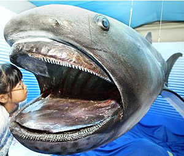
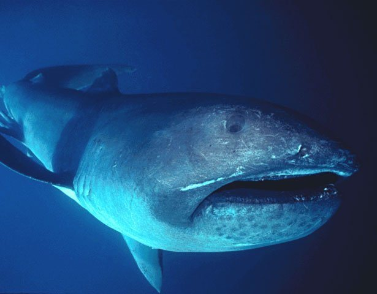
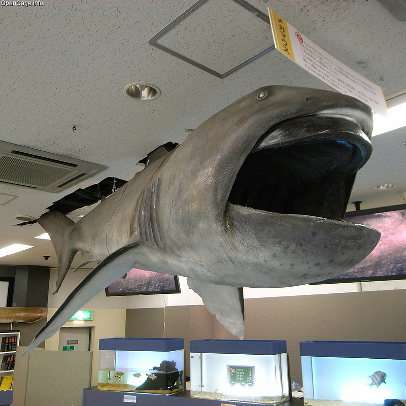
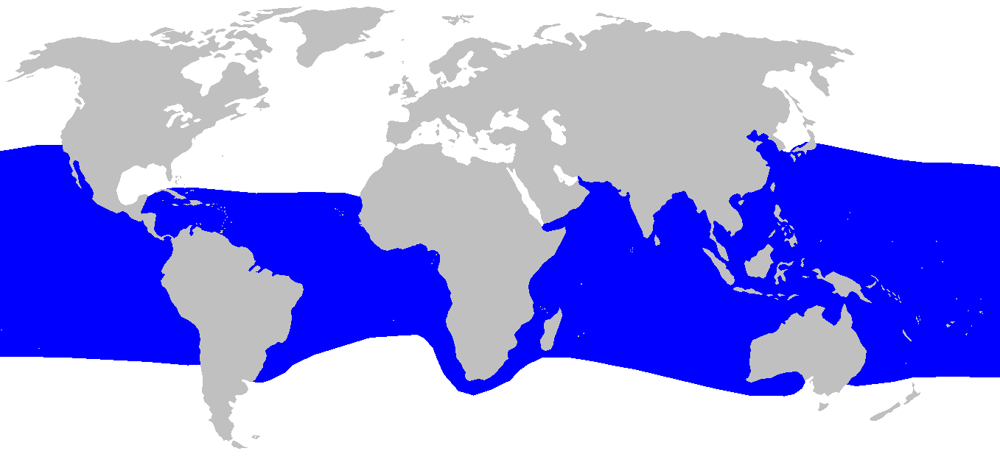
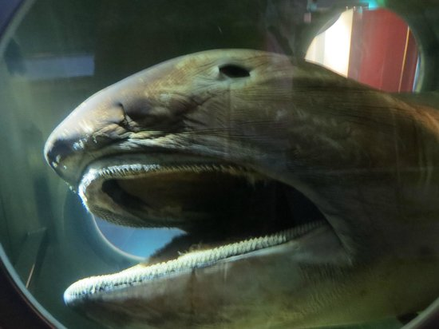
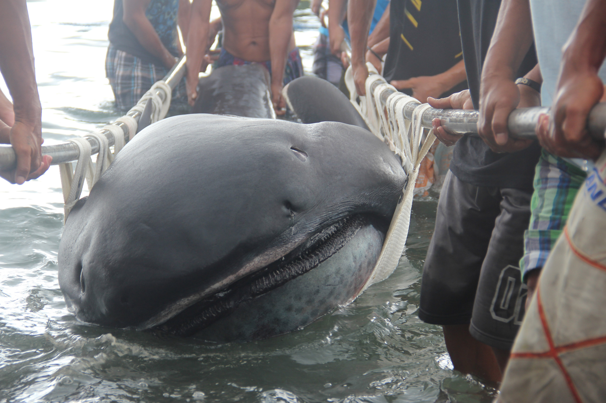

Megamouth Shark

The megamouth shark (Megachasma pelagios) is a species of deepwater shark. It is rarely seen by humans and is the smallest of the three extant filter-feeding sharks alongside the whale shark and basking shark. Since its discovery in 1976, few megamouth sharks have been seen, with fewer than 100 specimens being observed or caught. Like the other two planktivorous sharks, it swims with its enormous mouth wide open, filtering water for plankton and jellyfish. It is distinctive for its large head with rubbery lips. It is so unlike any other type of shark that it is usually considered to be the sole extant species in the distinct family Megachasmidae, though suggestion has been made that it may belong in the family Cetorhinidae, of which the basking shark is currently the sole extant member. Researchers have predicted the feeding patterns of megamouth sharks in relation to the other two planktivorous sharks; the three plankivourous sharks have ram feeding in common, as it evolved from ram feeding swimming-type ancestors that developed their filtering mechanism to capture small prey like plankton. In addition to the living M. pelagios, however, two extinct megamouth species – the Priabonian M. alisonae and the Oligocene–Miocene M. applegatei – have also recently been proposed on the basis of fossilized tooth remains. However, the Cretaceous-aged M. comanchensis has been recently reclassified as an odontaspid shark in the genus Pseudomegachasma, and is in fact unrelated to the megamouth shark despite similar teeth morphology.
Description
The appearance of the megamouth is distinctive, but little else is known about it. It has a brownish-black colour on top, is white underneath, and has an asymmetrical tail with a long upper lobe, similar to that of the thresher shark. The interior of its gill slits are lined with finger-like gill rakers that capture its food. A relatively poor swimmer, the megamouth has a soft, flabby body and lacks caudal keels. The megamouth is considerably less active than the other filter-feeding sharks, the basking shark and the whale shark. The megamouth has a stout body and a long, wide bulbous head.
Megamouths are large sharks, able to grow to 5.49 metres (18.0 ft) in length. Males mature by 4 m (13 ft) and females by 5 m (16 ft). Weights of up to 1,215 kg (2,679 lb) have been reported.
As their name implies, megamouths have a large mouth with small teeth, and a broad, rounded snout, causing observers to occasionally mistake megamouth for a young orca. The protruding inside of the upper lip is a brilliant silvery-white, which is very visible when the mouth is open. This lip was initially thought to be possibly embedded by luminous photophores when the first shark were examined in the early 1980s, which may act as a lure for plankton, while the team examining the second shark in the mid-1980s instead proposed that the lower lip might glow with the white band used as a reflector of sorts, but neither theory has been proven. This white band is present in both sexes and could be either a feeding mechanism or possibly be used as a means of identifying other individuals of megamouth sharks. Their mouths can reach up to 1.3 m (4 ft 3 in) wide. Megamouth sharks have up to 50 rows of teeth in their upper-jaw and up to 75 rows of teeth in their lower-jaw.
Behavior
In 1990, a 4.9-m (16-foot) male megamouth shark was caught near the surface off Dana Point, California. This individual was eventually released with a small radio tag attached to its soft body. The tag relayed depth and time information over a two-day period. During the day, the shark swam at a depth around 120–160 m (390–520 ft), but as the sun set, it would ascend and spend the night at depths between 12 and 25 m (39 and 82 ft). Both day and night, its progress was very slow, around 1.5–2.1 km/h (0.93–1.30 mph). This pattern of vertical migration is seen in many marine animals as they track the movement of plankton in the water column. The shark captured in March 2009 was reportedly netted at a depth of 200 m (660 ft).
Reproduction
Reproduction is ovoviviparous, meaning that the young sharks develop in eggs that remain within the mother's body until they hatch. Tissue samples were obtained from twenty-seven megamouths caught in a two year period off the Hualien coast (eastern Taiwan), and two caught in Baja California, Mexico, and samples taken from GenBank in order to perform a population genetic analyses of the megamouth shark; the results indicated no genetic diversity between populations found in different geographical locations, which indicates the species forms a single, highly migratory, interbreeding population.
Discovery
The first megamouth shark was captured on November 15, 1976, about 25 miles off the coast of Kāneʻohe, Hawaiʻi, when it became entangled in the sea anchor of United States Navy ship AFB-14. The species was identified as being of a new genus within the planktivorous shark species. Examination of the 4.5-m (14.7-ft), 750-kg (1,650-lb) specimen by Leighton Taylor showed it to be an entirely unknown type of shark, making it – along with the coelacanth – one of the more sensational discoveries in 20th-century ichthyology. The pectoral fin of the megamouth shark was studied, along with the skeletal and muscular system of the megamouth shark to show its phylogenetic relationship to the other two sharks.
Known Specimens
As of 5 March 2018, only 99 megamouth specimens had been caught or sighted. They have been found in the Pacific, Atlantic, and Indian Oceans. Japan, the Philippines and Taiwan have each yielded at least 10 specimens, the most of any single area, amounting to more than half the worldwide total. Specimens have also been sighted in or come out of the waters near Hawaii, California, Mexico, Indonesia, Australia, Brazil, Senegal, South Africa, Puerto Rico, Ecuador, and possibly Vietnam.
On March 30, 2009, off Burias Island in the Philippines, an 880- to 1,100-pound (400- to 500-kg) 4-metre (13-foot) megamouth shark died while struggling in a fisherman's net and was subsequently taken to nearby Donsol in Sorsogon province, where it was examined by scientists, before being butchered and sold.
On June 12, 2011, a 3-m (10-ft) dead juvenile male was found by fishermen near the western Baja California Peninsula coast, in Sebastián Vizcaíno Bay. It was picked up by the same fishing vessel that in 2006 captured another megamouth specimen in Sebastián Vizcaíno Bay, which has led Mexican scientists to believe that the megamouth could be a seasonal visitor to the Baja California Peninsula. The new specimen was taken to Ensenada, where it was photographed and sliced for Scripps Institution of Oceanography and Mexican researchers to study the structure of its muscles and gills.
On May 7, 2014, a 4 m (13 ft), 680 kg (1,500 lb) female shark was captured at a depth of 800 m (2,600 ft) off the coast of Shizuoka, Japan. The body was dissected in front of the public, by staff at the Marine Science Museum in Shizuoka City, Japan.
On June 30, 2014, a 500 kg (1,100 lb) female shark was captured in the shallow waters of Cagayan de Oro in the Philippines. Samples were sent to the Bureau of Fisheries and Aquatic Resources in northern Mindanao (BFAR-10) and the outer skin, mounted along with the jaw, is on display at the D' Bone Collector Museum in Davao.
On January 28, 2015, a 4.5 m (15 ft) deceased megamouth shark was found by residents of Barangay Marigondon, in Pioduran town, Albay, Philippines. It is now on display at the Albay Parks and Wildlife, opened to the public since March 3, 2015, which coincided with Albay's celebration of the World Wildlife Day. The megamouth shark was preserved through taxidermy, and is now considered one of the more precious collections of Albay, a leading province in environment protection.
On April 14, 2016, a 5 m (16 ft) deceased megamouth shark was caught in a fisherman's net in Japan's Mie Prefecture, around three miles off Owase Port. The shark weighed an estimated 907 kg (2,000 lb). In August 2016 the shark was dissected before an audience of students and academics. The event was organized by Osaka Aquarium in Osaka, Japan.
On May 1, 2017, a nearly 3 m (9.8 ft) deceased megamouth shark washed up at Barangay Baluarte in the Misamis Oriental, a region in the Northern Mindanao of the Philippines. The estimated 600 kg (1,300 lb) shark was buried to prevent locals from consuming the fish, as authorities were unsure of the cause of death.
On May 22, 2017, a live megamouth shark was found in a fishing net off Sunosaki lighthouse in Tateyama, Chiba Prefecture, Japan. The estimated 5 m (16 ft) to 6 m (20 ft) female was filmed by an Asahi Shimbun photographer and examined by a TV celebrity marine biologist who calls himself Sakana-kun, or Fish Kid. The shark died the following day.
As of July 2017, the preserved and partially dissected head of a megamouth shark was on display at Osaka Aquarium in Osaka, Japan.
On July 25, 2017, a megamouth shark was recorded on video at Gili Lawa Laut near Komodo island, Indonesia, as it swam slowly past divers Penny Bielich and Heikki Innanen. The shark appeared to have at least one remora attached.
On February 11, 2018, a juvenile male measuring 4.34 meters in length was accidentally entangled in a fishing net off the coast of Negros Oriental in the Philippines. The body of the deceased shark was towed back and buried at Barangay Villareal later that afternoon. It was exhumed the following day so scientists could conduct a necropsy and get tissue samples for research.